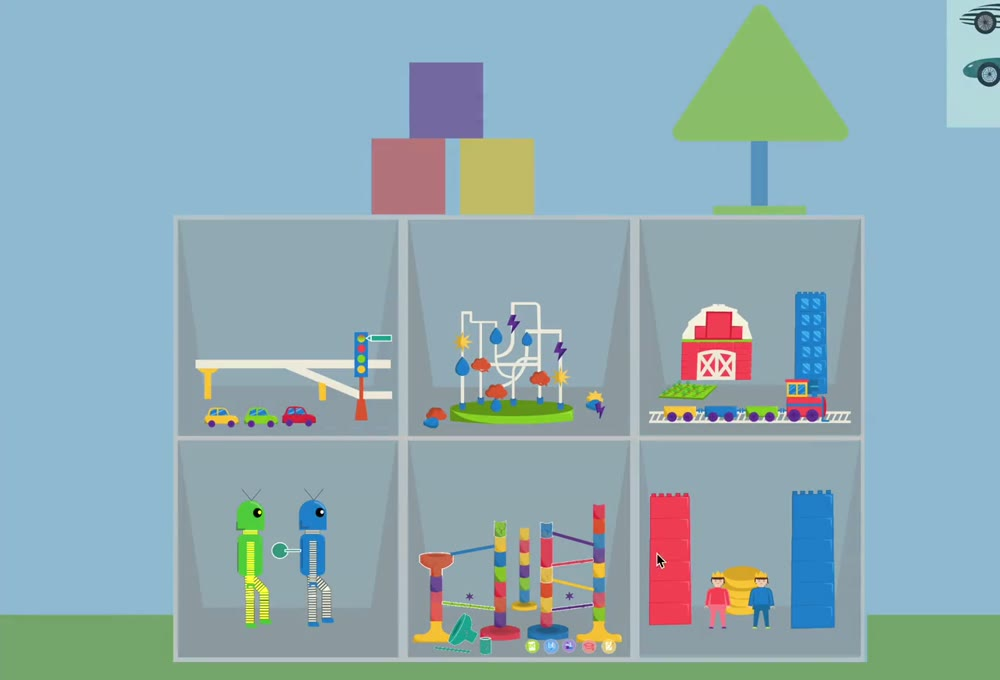
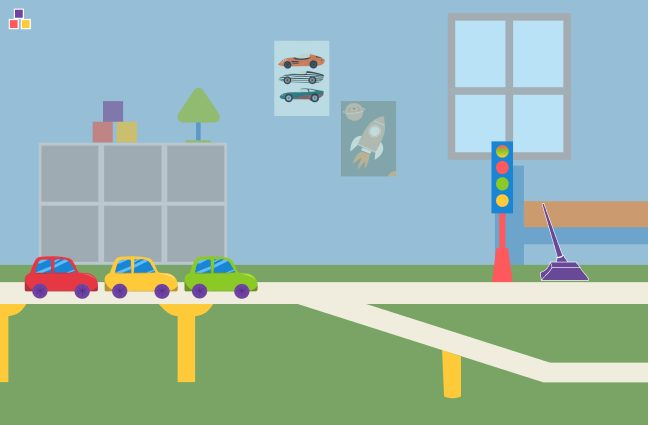
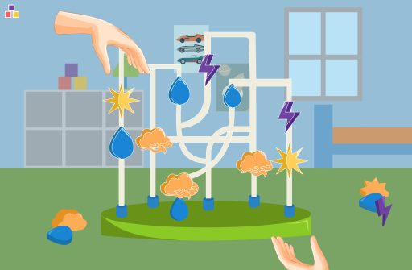
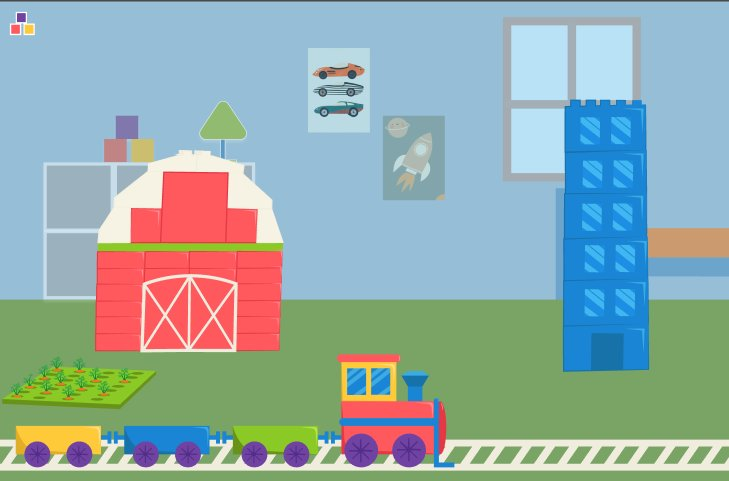
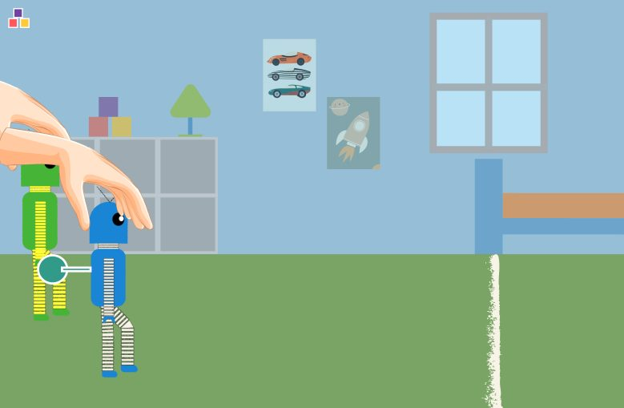
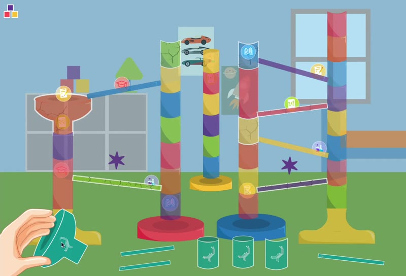
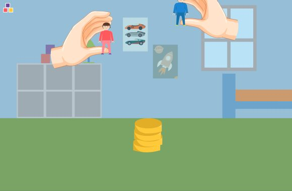

Taller de Diseño Multimedial 4 · 2025
Infografía interactiva
Seis conceptos sobre sistemas complejos, explicados con juguetes y minijuegos, sin una sola palabra en pantalla.
Ficha del proyecto
- Proyecto
- Infografía interactiva
- Contexto
- Taller de Diseño Multimedial 4 · UNLP · 2025
- Equipo
- 5 integrantes
- Tecnología
- Java → p5.js
La consigna
Diseñar una infografía dinámica e interactiva que explique un grupo de conceptos sobre sistemas complejos, con una estética visual y sonora y una lógica de interacción propias, usando recursos retóricos para representar cada idea.
Para llegar ahí, diseccionamos cada frase: buscamos la definición de cada palabra y la fuimos reformulando hasta entender la idea. Recién después elegimos un tema que uniera los seis conceptos: los juguetes.
Nuestra respuesta: un cuarto de chicos donde la estantería es el menú y cada juguete abre un minijuego que representa un concepto. No hay texto: la idea se entiende jugando, y la mano indica qué se puede agarrar.
Mi rol: diseñé 1 de los juegos y programé 5 de los 6. Primero los programé en Java y después los pasé a p5.js.

Seis conceptos, seis juguetes





